Miscalibration caused by inappropriate hyperparameters#
Model complexity is controlled both by the choice of the model class, the choice of preprocessing steps in the ML pipeline and by the choice of hyperparameters at each step. Depending on those choices, we can obtain pipelines that are under-fitting or over-fitting. In this notebook, we investigate the relationship between models hyperparameters, model complexity, and their calibration.
Let’s start by defining our classification problem: we use the so-called
(noisy) XOR problem. The function xor_generator generates a dataset with
two features and the target variable following the XOR logic. We add some
noise to the generative process to ensure that the target is not a fully
deterministic function of the features as this is never the case in real
applications of machine learning.
# Make sure to have scikit-learn >= 1.5
import sklearn
sklearn.__version__
'1.9.0'
import numpy as np
def xor_generator(n_samples=1_000, seed=None):
rng = np.random.default_rng(seed)
X = rng.uniform(low=-3, high=3, size=(n_samples, 2))
unobserved = rng.normal(loc=0, scale=0.5, size=(n_samples, 2))
y = np.logical_xor(X[:, 0] + unobserved[:, 0] > 0, X[:, 1] + unobserved[:, 1] > 0)
return X, y
We can now generate a dataset and visualize it.
import matplotlib.pyplot as plt
X_train, y_train = xor_generator(seed=0)
_, ax = plt.subplots()
ax.scatter(*X_train.T, c=y_train, cmap="coolwarm", edgecolors="black", alpha=0.5)
_ = ax.set(
xlim=(-3, 3),
ylim=(-3, 3),
xlabel="Feature 1",
ylabel="Feature 2",
title="Noisy XOR problem",
aspect="equal",
)
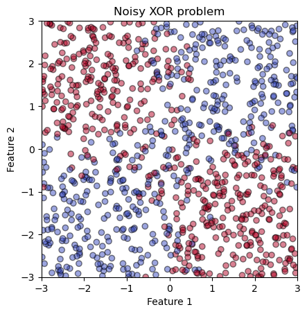
The XOR problem exhibits a non-linear decision link between the features and the the target variable. Therefore, a linear classification model is not be able to separate the classes correctly. Let’s confirm this intuition by fitting a logistic regression model to such a dataset.
from sklearn.linear_model import LogisticRegression
model = LogisticRegression()
model.fit(X_train, y_train)
LogisticRegression()In a Jupyter environment, please rerun this cell to show the HTML representation or trust the notebook.
On GitHub, the HTML representation is unable to render, please try loading this page with nbviewer.org.
Parameters
Fitted attributes
Let’s visualize the decision boundary learned by the model:
from sklearn.inspection import DecisionBoundaryDisplay
fig, ax = plt.subplots()
params = {
"cmap": "coolwarm",
"response_method": "predict_proba",
"plot_method": "contourf",
# make sure to have a range of 0 to 1 for the probability
"vmin": 0,
"vmax": 1,
}
disp = DecisionBoundaryDisplay.from_estimator(model, X_train, ax=ax, **params)
ax.scatter(*X_train.T, c=y_train, cmap=params["cmap"], edgecolors="black", alpha=0.5)
fig.colorbar(disp.surface_, ax=ax, label="Probability estimate")
_ = ax.set(
xlim=(-3, 3),
ylim=(-3, 3),
xlabel="Feature 1",
ylabel="Feature 2",
title="Soft decision boundary of a logistic regression",
aspect="equal",
)
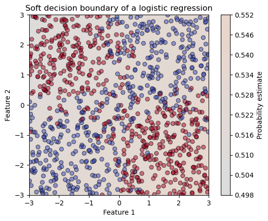
We see that the probability estimate is almost constant (near 0.5) everywhere in the feature space: the model is really uncertain.
We therefore need a more expressive model to capture the non-linear relationship between the features and the target variable. Crafting a pre-processing step to transform the features into a higher-dimensional space could help.
Here we choose to create a pipeline that includes a first spline expansion for each feature followed a polynomial transformation to capture multiplicative interaction across features before passing the result to a final logistic regression model.
from sklearn.preprocessing import SplineTransformer, PolynomialFeatures
from sklearn.linear_model import LogisticRegression
from sklearn.pipeline import make_pipeline
model = make_pipeline(
# Expand each feature marginally using splines:
SplineTransformer(),
# Model multiplicative interactions across features:
PolynomialFeatures(interaction_only=True),
# Increase the number of iterations to ensure convergence even with low
# regularization when tuning C later.
LogisticRegression(max_iter=10_000),
)
model.fit(X_train, y_train)
Pipeline(steps=[('splinetransformer', SplineTransformer()),
('polynomialfeatures',
PolynomialFeatures(interaction_only=True)),
('logisticregression', LogisticRegression(max_iter=10000))])In a Jupyter environment, please rerun this cell to show the HTML representation or trust the notebook. On GitHub, the HTML representation is unable to render, please try loading this page with nbviewer.org.
Parameters
Fitted attributes
Parameters
Fitted attributes
14 features
| x0_sp_0 |
| x0_sp_1 |
| x0_sp_2 |
| x0_sp_3 |
| x0_sp_4 |
| x0_sp_5 |
| x0_sp_6 |
| x1_sp_0 |
| x1_sp_1 |
| x1_sp_2 |
| x1_sp_3 |
| x1_sp_4 |
| x1_sp_5 |
| x1_sp_6 |
Parameters
Fitted attributes
| Name | Type | Value |
|---|---|---|
|
n_features_in_
n_features_in_: int Number of features seen during :term:`fit`. .. versionadded:: 0.24 |
int | 14 |
|
n_output_features_
n_output_features_: int The total number of polynomial output features. The number of output features is computed by iterating over all suitably sized combinations of input features. |
int | 106 |
|
powers_
powers_: ndarray of shape (`n_output_features_`, `n_features_in_`) `powers_[i, j]` is the exponent of the jth input in the ith output. |
ndarray[int64](106, 14) | [[0,0,0,...,0,0,0], [1,0,0,...,0,0,0], [0,1,0,...,0,0,0], ..., [0,0,0,...,1,1,0], [0,0,0,...,1,0,1], [0,0,0,...,0,1,1]] |
106 features
| 1 |
| x0 |
| x1 |
| x2 |
| x3 |
| x4 |
| x5 |
| x6 |
| x7 |
| x8 |
| x9 |
| x10 |
| x11 |
| x12 |
| x13 |
| x0 x1 |
| x0 x2 |
| x0 x3 |
| x0 x4 |
| x0 x5 |
| x0 x6 |
| x0 x7 |
| x0 x8 |
| x0 x9 |
| x0 x10 |
| x0 x11 |
| x0 x12 |
| x0 x13 |
| x1 x2 |
| x1 x3 |
| x1 x4 |
| x1 x5 |
| x1 x6 |
| x1 x7 |
| x1 x8 |
| x1 x9 |
| x1 x10 |
| x1 x11 |
| x1 x12 |
| x1 x13 |
| x2 x3 |
| x2 x4 |
| x2 x5 |
| x2 x6 |
| x2 x7 |
| x2 x8 |
| x2 x9 |
| x2 x10 |
| x2 x11 |
| x2 x12 |
| x2 x13 |
| x3 x4 |
| x3 x5 |
| x3 x6 |
| x3 x7 |
| x3 x8 |
| x3 x9 |
| x3 x10 |
| x3 x11 |
| x3 x12 |
| x3 x13 |
| x4 x5 |
| x4 x6 |
| x4 x7 |
| x4 x8 |
| x4 x9 |
| x4 x10 |
| x4 x11 |
| x4 x12 |
| x4 x13 |
| x5 x6 |
| x5 x7 |
| x5 x8 |
| x5 x9 |
| x5 x10 |
| x5 x11 |
| x5 x12 |
| x5 x13 |
| x6 x7 |
| x6 x8 |
| x6 x9 |
| x6 x10 |
| x6 x11 |
| x6 x12 |
| x6 x13 |
| x7 x8 |
| x7 x9 |
| x7 x10 |
| x7 x11 |
| x7 x12 |
| x7 x13 |
| x8 x9 |
| x8 x10 |
| x8 x11 |
| x8 x12 |
| x8 x13 |
| x9 x10 |
| x9 x11 |
| x9 x12 |
| x9 x13 |
| x10 x11 |
| x10 x12 |
| x10 x13 |
| x11 x12 |
| x11 x13 |
| x12 x13 |
Parameters
Fitted attributes
Let’s check the decision boundary of the model on the test set.
fig, ax = plt.subplots()
disp = DecisionBoundaryDisplay.from_estimator(model, X_train, ax=ax, **params)
ax.scatter(*X_train.T, c=y_train, cmap=params["cmap"], edgecolors="black", alpha=0.5)
fig.colorbar(disp.surface_, ax=ax, label="Probability estimate")
_ = ax.set(
xlim=(-3, 3),
ylim=(-3, 3),
xlabel="Feature 1",
ylabel="Feature 2",
title="Soft decision boundary of a logistic regression\n with pre-processing",
aspect="equal",
)
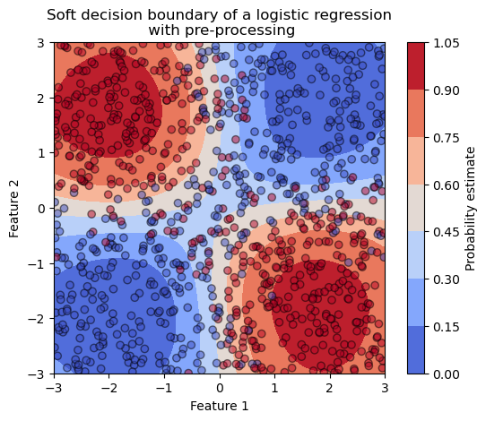
We see that our refined pipeline is capable of capturing the non-linear relationship between the features and the target variable. The probability estimates are now varying across the samples.
To evaluate the calibration of the model, we plot the calibration curve on an independent test set. Here we generate a test set with a large number of data points to get a stable estimate of the quality of the model. Using large test sets is a luxurary that we can typically not afford in practice, we only do it here for educational reasons. The alternative would be to run the full analysis multiple times via cross-validation but we refrain from doing this here to keep the notebook simple.
X_test, y_test = xor_generator(n_samples=10_000, seed=1)
from sklearn.calibration import CalibrationDisplay
disp = CalibrationDisplay.from_estimator(
model,
X_test,
y_test,
strategy="quantile",
n_bins=10,
)
_ = disp.ax_.set(aspect="equal")
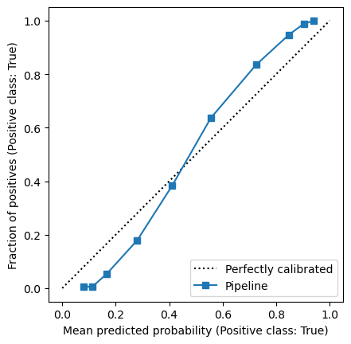
We observe that the calibration of the model is far from ideal. Is there a way to improve the calibration of our model?
Exercise:#
As an exercise, let’s try to three different hyperparameters configurations:
one configuration with 5 knots (i.e.
n_knots) for the spline transformation and a regularization parameterCof 1e-1 for the logistic regression,one configuration with 7 knots for the spline transformation and a regularization parameter
Cof 1e1 for the logistic regression,one configuration with 15 knots for the spline transformation and a regularization parameter
Cof 1e4 for the logistic regression.
For each configuration, plot the decision boundary and the calibration curve. What can you observe in terms of under-/over-fitting and calibration?
param_configs = [
{"splinetransformer__n_knots": 5, "logisticregression__C": 1e-1},
{"splinetransformer__n_knots": 7, "logisticregression__C": 1e1},
{"splinetransformer__n_knots": 15, "logisticregression__C": 1e4},
]
# TODO: write me!
Solution:#
param_configs = [
{"splinetransformer__n_knots": 5, "logisticregression__C": 1e-1},
{"splinetransformer__n_knots": 7, "logisticregression__C": 1e1},
{"splinetransformer__n_knots": 15, "logisticregression__C": 1e4},
]
for model_params in param_configs:
model.set_params(**model_params)
model.fit(X_train, y_train)
fig, ax = plt.subplots(nrows=1, ncols=2, figsize=(10, 5))
disp = DecisionBoundaryDisplay.from_estimator(model, X_train, ax=ax[0], **params)
ax[0].scatter(
*X_train.T, c=y_train, cmap=params["cmap"], edgecolors="black", alpha=0.5
)
ax[0].set(
xlim=(-3, 3),
ylim=(-3, 3),
xlabel="Feature 1",
ylabel="Feature 2",
aspect="equal",
)
CalibrationDisplay.from_estimator(
model,
X_test,
y_test,
strategy="quantile",
n_bins=10,
ax=ax[1],
)
ax[1].set(aspect="equal")
fig.suptitle(
f"Number of knots: {model_params['splinetransformer__n_knots']}, "
f"Regularization 'C': {model_params['logisticregression__C']}"
)
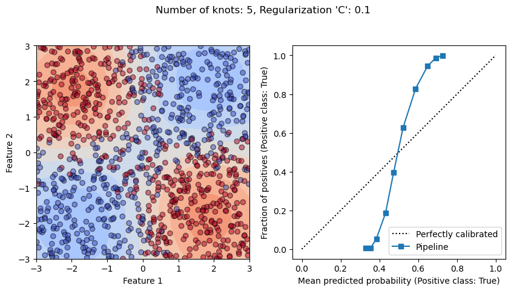
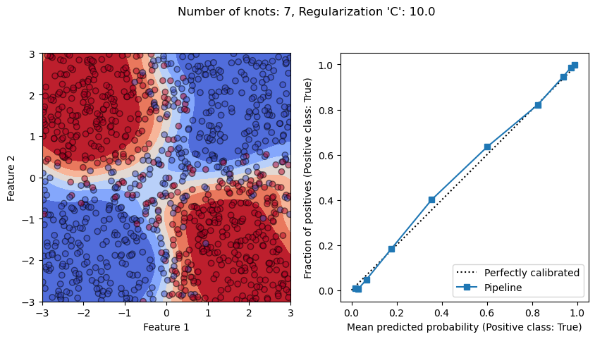
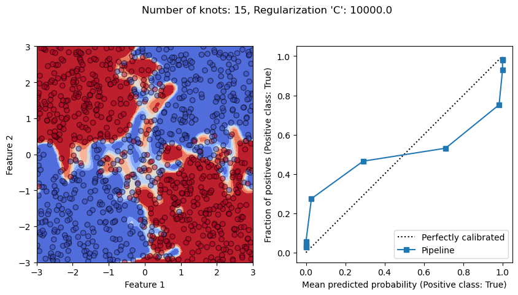
From the previous exercise, we observe that whether we have an under-fitting
or over-fitting model impact its calibration. With a high regularization
(i.e. C=1e-1), we see that the model undefits as it is too constrained to
be able to predict high enough probabilties in areas of the feature space
without any class ambiguity. It translates into obtaining a vertical-ish
calibration curve meaning that our model is underconfident.
On the other hand, if we have a low regularization (i.e. C=1e4), and allows
the the model to be flexible by having a large number of knots, we see that
the model overfits since it is able to isolate noisy samples in the feature
space. It translates into a calibration curve where we observe that our model
is overconfident.
Finally, there is a sweet spot where the model between underfitting and overfitting. In this case, we also get a well calibrated model.
We can push the analysis further by assessing the impact of wider range of hyperparameters:
varying
n_knotsof theSplineTransformerpreprocessing step,choosing whether or not to model multiplicative feature interactions using a
PolynomialFeatures,varying the regularization parameter
Cof the finalLogisticRegressionclassifier.
We can plot the full grid of hyperparameters to see the effect on the decision boundary and the calibration curve.
from sklearn.model_selection import ParameterGrid
param_grid = list(
ParameterGrid(
{
"logisticregression__C": np.logspace(-1, 3, 5),
"splinetransformer__n_knots": [5, 10, 15],
"polynomialfeatures": [None, PolynomialFeatures(interaction_only=True)],
}
)
)
fig_params = {
"nrows": 5,
"ncols": 6,
"figsize": (40, 35),
"sharex": True,
"sharey": True,
}
boundary_figure, boundary_axes = plt.subplots(**fig_params)
calibration_figure, calibration_axes = plt.subplots(**fig_params)
for idx, (model_params, ax_boundary, ax_calibration) in enumerate(
zip(param_grid, boundary_axes.ravel(), calibration_axes.ravel())
):
model.set_params(**model_params).fit(X_train, y_train)
# Create a title
title = f"{model_params['splinetransformer__n_knots']} knots"
title += " with " if model_params["polynomialfeatures"] else " without "
title += "interaction"
# Display the results
disp = DecisionBoundaryDisplay.from_estimator(
model, X_test, ax=ax_boundary, **params
)
ax_boundary.scatter(
*X_train.T, c=y_train, cmap=params["cmap"], edgecolor="black", alpha=0.5
)
ax_boundary.set(
xlim=(-3, 3),
ylim=(-3, 3),
aspect="equal",
title=title,
)
CalibrationDisplay.from_estimator(
model,
X_test,
y_test,
strategy="quantile",
n_bins=10,
ax=ax_calibration,
)
ax_calibration.set(aspect="equal", title=title)
if idx % fig_params["ncols"] == 0:
for ax in (ax_boundary, ax_calibration):
ylabel = f"Regularization 'C': {model_params['logisticregression__C']}"
ylabel += f"\n\n\n{ax.get_ylabel()}" if ax.get_ylabel() else ""
ax.set(ylabel=ylabel)
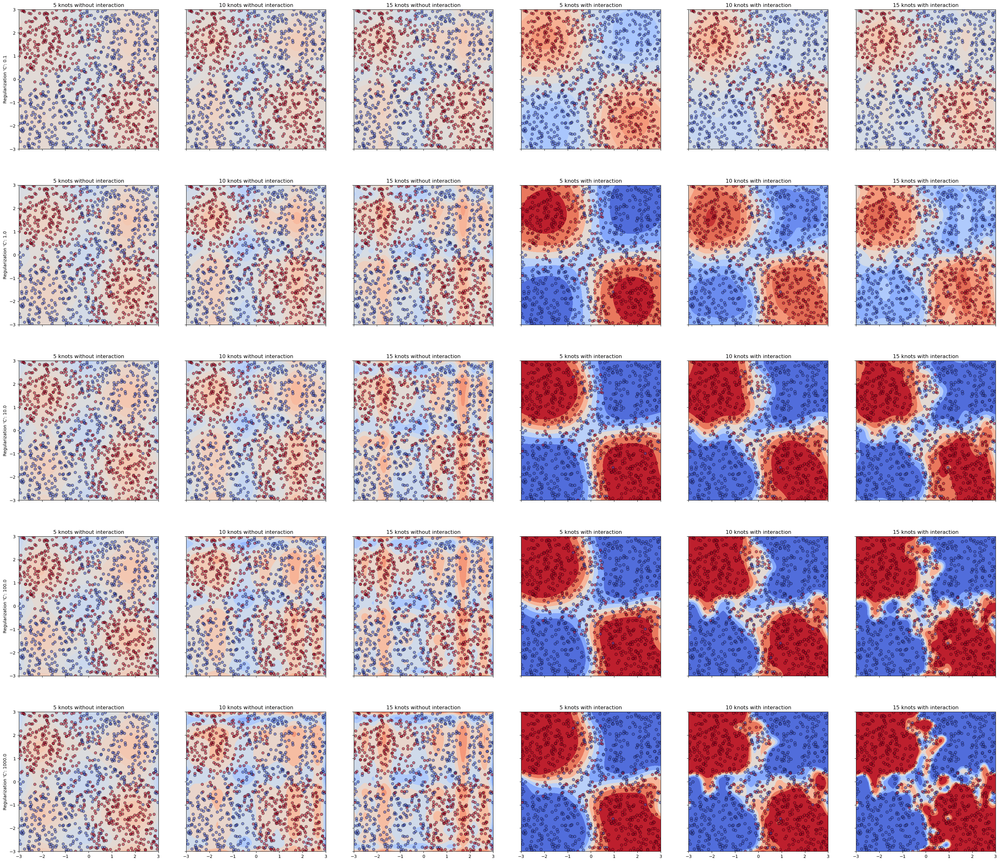
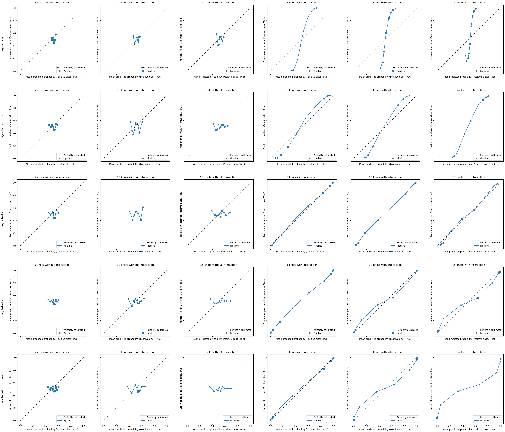
An obvious observation is that without explicitly creating the interaction terms, our model is fundamentally mis-specified: model cannot represent the non-linear relationship, whatever the other hyperparameters values.
A large enough number of knots in the spline transformation combined with
interactions increases the flexibility of the learning procedure: the
decision boundary can isolate more and more subregions of the feature space.
Therefore, if we use a too large number of knots, then the model is able
isolate noisy training data points when C allows.
Indeed, the parameter C controls the loss function that is minimized during
the training: a small value of C enforces to minimize the norm of the model
coefficients and thus discard the influence of changes in feature values. A
large value of C enforces to prioritize minimizing the training error
without constraining, more or less, the norm of the coefficients.
There therefore an interaction between the number of knots and the
regularization parameter C: a model with a larger number of knots is more
flexible and thus more prone to overfitting, the optimal value of the
parameter C should be smaller (i.e. more regularization) than a model with
a smaller number of knots.
For instance, setting C=100 with n_knots=5 leads to a model with a
similar calibration curve as setting C=10 with n_knots=15.
Is it true for other models?#
In this section, we want to show that the previous findings are not specific to the a linear model that relies on a pre-processing step. Here, we use a gradient-boosting model that naturally captures non-linear relationships of the XOR problem without any need for a pre-processing step.
We the impact of the choice for the max_leaf_nodes and learning_rate
hyperparameters on the calibration curves when holding the number of boosting
iteration fixed. Those hyperparameters are known to impact the model
complexity and therefore the under-fitting/over-fitting trade-off.
from sklearn.ensemble import HistGradientBoostingClassifier
model = HistGradientBoostingClassifier()
param_grid = list(
ParameterGrid({"max_leaf_nodes": [5, 10, 30], "learning_rate": [0.01, 0.1, 1]})
)
fig_params = {
"nrows": 3,
"ncols": 3,
"figsize": (16, 16),
"sharex": True,
"sharey": True,
}
boundary_figure, boundary_axes = plt.subplots(**fig_params)
calibration_figure, calibration_axes = plt.subplots(**fig_params)
for idx, (model_params, ax_boundary, ax_calibration) in enumerate(
zip(param_grid, boundary_axes.ravel(), calibration_axes.ravel())
):
model.set_params(**model_params).fit(X_train, y_train)
# Create a title
title = f"Maximum number of leaf nodes: {model_params['max_leaf_nodes']}"
# Display the results
disp = DecisionBoundaryDisplay.from_estimator(
model, X_train, ax=ax_boundary, **params
)
ax_boundary.scatter(
*X_train.T, c=y_train, cmap=params["cmap"], edgecolor="black", alpha=0.5
)
ax_boundary.set(
xlim=(-3, 3),
ylim=(-3, 3),
aspect="equal",
title=title,
)
CalibrationDisplay.from_estimator(
model,
X_test,
y_test,
strategy="quantile",
n_bins=10,
ax=ax_calibration,
)
ax_calibration.set(aspect="equal", title=title)
if idx % fig_params["ncols"] == 0:
for ax in (ax_boundary, ax_calibration):
ylabel = f"Learning rate: {model_params['learning_rate']}"
ylabel += f"\n\n\n{ax.get_ylabel()}" if ax.get_ylabel() else ""
ax.set(ylabel=ylabel)
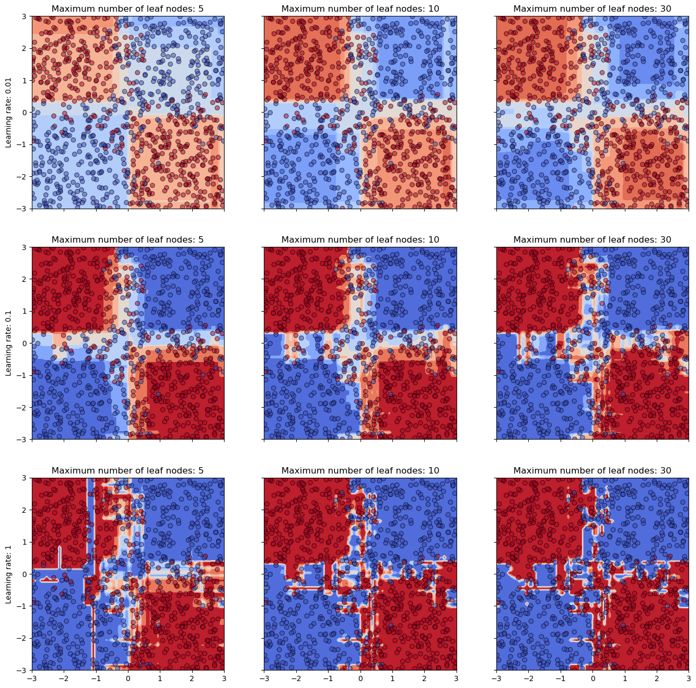
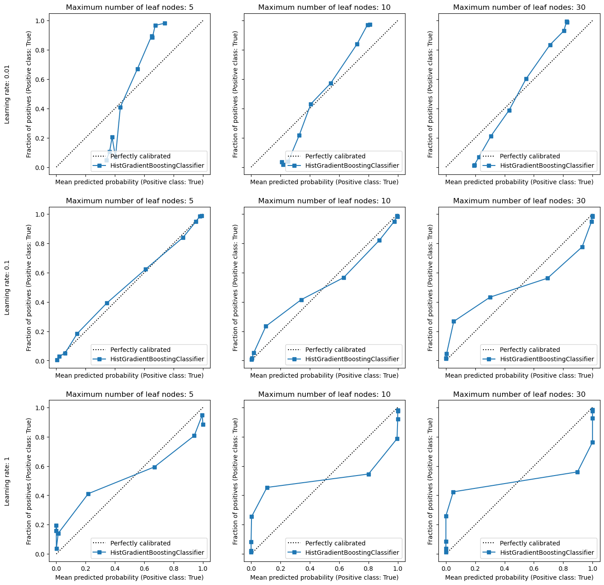
From the boundary decision plots, we observe that all the explored models are
capable of capturing the link between the features and the target. However,
if we look at the probability estimates, we still observe the same effect of
under-fitting and over-fitting as for our polynomial classification pipeline.
It also means that tuning the parameter max_leaf_nodes on this simplistic
2D dataset is not worth it since for a single decision tree, the perfect
decision boundary is achieved with only 4 leaf nodes. This would not be the
case on more complex datasets such as a noisy checkerboard classification
task for instance.
However, the learning rate is the parameter that controls if the model under-fits or over-fits. A too low learning rate leads to an under-fitting model and the model is underconfident with probability estimates that are too close to 0.5, even in low ambiguity regions of the feature space. On the other hand, a too high learning rate leads to an over-fitting model and the model is over-confident with probability estimates that are too close to 0 or 1.
Calibration-aware hyperparameter tuning#
From the previous sections, we saw that the hyperparameters of a model while
impacting its complexity also impact its calibration. It therefore becomes
crucial to consider calibration when tuning the hyperparameters of a model.
While scikit-learn offers tools to tune hyperparameters such as
GridSearchCV or RandomizedSearchCV, there is a caveat: the default metric
used to select the best model is not necessarily the one leading to a
well-calibrated model.
To illustrate this point, we use the previous polynomial pipeline. From the
previous experiment, we draw the conclusion that we need to have some
regularization to avoid overfitting when the number of knots is large enough.
Therefore, we plot the validation curve for different values of the
regularization parameter C. In addition, since we want to see the impact of
the metric used to tuned the hyperparameters, we plot different validation
curves for different metrics:
the negative log-likelihood that is a proper scoring rule,
the ROC AUC that is a ranking metric,
the accuracy that is a thresholded metric.
Here we simulate 200 iterations of selecting the best value of C using the mean cross-validation across 5 iteration via a form of bootstrapping. The objective is to assess the stability of the tuning procedure for different choices of the classification metric.
We conduct a similar study for the gradient-boosting model by varying the
max_leaf_nodes hyperparameter.
from pathlib import Path
from mpl_toolkits.axes_grid1.axes_divider import make_axes_locatable
from sklearn.model_selection import ShuffleSplit, validation_curve
spline_model = make_pipeline(
SplineTransformer(n_knots=15),
PolynomialFeatures(interaction_only=True),
LogisticRegression(max_iter=10_000),
)
gbrt_model = HistGradientBoostingClassifier(max_iter=100, max_leaf_nodes=5)
# Since the computation of the validation curve is expensive, we reuse
# precomputed results when available on disk.
n_splits = 100
setting = {
"spline_regression": {
"model": spline_model,
"param_name": "logisticregression__C",
"param_range": np.logspace(-2, 4, 30),
},
"gbrt": {
"model": gbrt_model,
"param_name": "learning_rate",
"param_range": np.logspace(-2, 0, 30),
},
}
test_scores = {}
try:
results_folder = Path(__file__).parent.parent / "results"
except NameError:
# __file__ is not defined in a notebook
results_folder = Path("..") / "results"
for model_name, model_setting in setting.items():
for metric_name in ["neg_log_loss", "roc_auc", "accuracy"]:
results_file_path = (
results_folder / f"validation_curve_{model_name}_{metric_name}.npz"
)
if results_file_path.exists():
print(
f"Loading validation curve for {model_name} with {metric_name} from disk."
)
with np.load(results_file_path) as data:
test_scores[(model_name, metric_name)] = data["test_scores"]
else:
print(f"Computing validation curve for {model_name} with {metric_name}.")
_, test_scores_metric = validation_curve(
model_setting["model"],
X_train,
y_train,
param_name=model_setting["param_name"],
param_range=model_setting["param_range"],
scoring=metric_name,
cv=ShuffleSplit(n_splits=n_splits, test_size=0.2, random_state=0),
n_jobs=-1,
)
parent_folder = results_file_path.parent
if not parent_folder.is_dir():
parent_folder.mkdir(parents=True)
np.savez(results_file_path, test_scores=test_scores_metric)
test_scores[(model_name, metric_name)] = test_scores_metric
Loading validation curve for spline_regression with neg_log_loss from disk.
Loading validation curve for spline_regression with roc_auc from disk.
Loading validation curve for spline_regression with accuracy from disk.
Loading validation curve for gbrt with neg_log_loss from disk.
Loading validation curve for gbrt with roc_auc from disk.
Loading validation curve for gbrt with accuracy from disk.
full_metric_name = {
"neg_log_loss": "negative log loss",
"roc_auc": "ROC AUC",
"accuracy": "accuracy",
}
for model_name, model_setting in setting.items():
fig, axes = plt.subplots(ncols=3, figsize=(10, 3), constrained_layout=True)
param_name = model_setting["param_name"]
param_range = model_setting["param_range"]
for idx, (metric_name, ax) in enumerate(
zip(["neg_log_loss", "roc_auc", "accuracy"], axes)
):
rng = np.random.default_rng(0)
bootstrap_size = 5
ax_hist = make_axes_locatable(ax).append_axes(
"top", size="20%", pad=0.1, sharex=ax
)
all_best_param_values = []
for _ in range(200):
selected_fold_idx = rng.choice(n_splits, size=bootstrap_size, replace=False)
mean_test_score = test_scores[(model_name, metric_name)][
:, selected_fold_idx
].mean(axis=1)
ax.plot(
param_range,
mean_test_score,
color="tab:blue",
linewidth=0.1,
zorder=-1,
)
best_param_idx = mean_test_score.argmax()
best_param_value = param_range[best_param_idx]
best_test_score = mean_test_score[best_param_idx]
ax.vlines(
best_param_value,
ymin=test_scores[(model_name, metric_name)].min(),
ymax=best_test_score,
linewidth=0.3,
color="tab:orange",
)
all_best_param_values.append(best_param_value)
ax.set(
xlabel=param_name,
ylabel=full_metric_name[metric_name],
xscale="log",
)
bins = (param_range[:-1] + param_range[1:]) / 2
ax_hist.hist(
all_best_param_values, bins=bins, color="tab:orange", edgecolor="black"
)
ax_hist.xaxis.set_tick_params(labelleft=False, labelbottom=False)
ax_hist.yaxis.set_tick_params(labelleft=False, labelbottom=False)
_ = fig.suptitle(
f"Stability of parameter tuning for {model_name} based on different metrics"
)
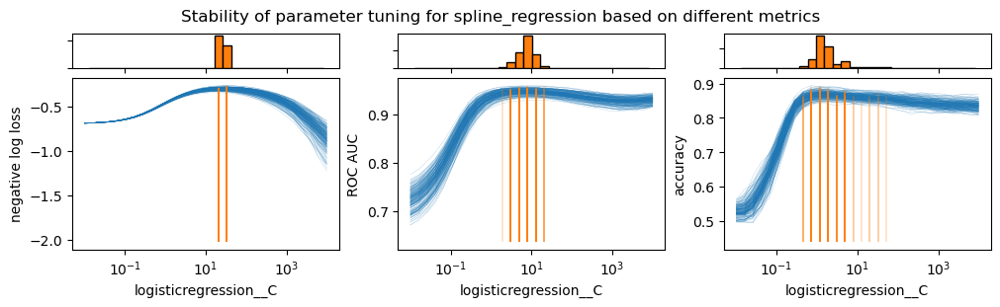
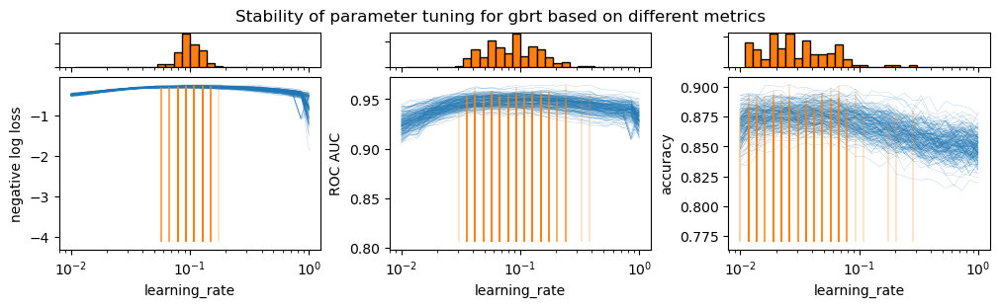
From the previous plots, there are three important observations.
First, the proper scoring rule (i.e. the negative log-likelihood) depicts a more distinct bump in comparison to the ranking metric (i.e. the ROC AUC) and the thresholded metric (i.e. the accuracy). The bump is still present for the ROC AUC but it is less pronounced. The accuracy does not show an a clearly located bump.
Then, the proper scoring rule is the only one showing a significant decrease in model performance when the regularization is too low. The intuition is that the model becomes over-confident and thus not well-calibrated. The other metrics do not penalize overconfidence.
Lastly, the proper scoring rule is the metric showing the least variability variability across different resampling when identifying the best hyperparameter. The ranking-only metric and the hard classification metric show a larger variability. This is due to the fact that the proper scoring rule is a more informative evaluation metric for probabilitic classifiers. It therefore makes it a more robust metric to select the best model.
We therefore recommend to use a proper scoring rule when tuning the
hyperparemeters of a probabilistic classifier. Below, we show the methodology
to pursue when using a proper scoring together with a RandomizedSearchCV by
setting scoring to "neg_log_loss".
from scipy.stats import loguniform
from sklearn.model_selection import RandomizedSearchCV
param_distributions = {
"splinetransformer__n_knots": [5, 10, 15],
"logisticregression__C": loguniform(1e-6, 1e6),
}
tuned_model = RandomizedSearchCV(
spline_model,
param_distributions=param_distributions,
n_iter=25,
scoring="neg_log_loss",
cv=ShuffleSplit(n_splits=10, test_size=0.2, random_state=0),
random_state=0,
)
tuned_model.fit(X_train, y_train)
RandomizedSearchCV(cv=ShuffleSplit(n_splits=10, random_state=0, test_size=0.2, train_size=None),
estimator=Pipeline(steps=[('splinetransformer',
SplineTransformer(n_knots=15)),
('polynomialfeatures',
PolynomialFeatures(interaction_only=True)),
('logisticregression',
LogisticRegression(max_iter=10000))]),
n_iter=25,
param_distributions={'logisticregression__C': <scipy.stats._distn_infrastructure.rv_continuous_frozen object at 0x7fa5d95367b0>,
'splinetransformer__n_knots': [5, 10,
15]},
random_state=0, scoring='neg_log_loss')In a Jupyter environment, please rerun this cell to show the HTML representation or trust the notebook. On GitHub, the HTML representation is unable to render, please try loading this page with nbviewer.org.
Parameters
Fitted attributes
Parameters
Fitted attributes
14 features
| x0_sp_0 |
| x0_sp_1 |
| x0_sp_2 |
| x0_sp_3 |
| x0_sp_4 |
| x0_sp_5 |
| x0_sp_6 |
| x1_sp_0 |
| x1_sp_1 |
| x1_sp_2 |
| x1_sp_3 |
| x1_sp_4 |
| x1_sp_5 |
| x1_sp_6 |
Parameters
Fitted attributes
| Name | Type | Value |
|---|---|---|
|
n_features_in_
n_features_in_: int Number of features seen during :term:`fit`. .. versionadded:: 0.24 |
int | 14 |
|
n_output_features_
n_output_features_: int The total number of polynomial output features. The number of output features is computed by iterating over all suitably sized combinations of input features. |
int | 106 |
|
powers_
powers_: ndarray of shape (`n_output_features_`, `n_features_in_`) `powers_[i, j]` is the exponent of the jth input in the ith output. |
ndarray[int64](106, 14) | [[0,0,0,...,0,0,0], [1,0,0,...,0,0,0], [0,1,0,...,0,0,0], ..., [0,0,0,...,1,1,0], [0,0,0,...,1,0,1], [0,0,0,...,0,1,1]] |
106 features
| 1 |
| x0 |
| x1 |
| x2 |
| x3 |
| x4 |
| x5 |
| x6 |
| x7 |
| x8 |
| x9 |
| x10 |
| x11 |
| x12 |
| x13 |
| x0 x1 |
| x0 x2 |
| x0 x3 |
| x0 x4 |
| x0 x5 |
| x0 x6 |
| x0 x7 |
| x0 x8 |
| x0 x9 |
| x0 x10 |
| x0 x11 |
| x0 x12 |
| x0 x13 |
| x1 x2 |
| x1 x3 |
| x1 x4 |
| x1 x5 |
| x1 x6 |
| x1 x7 |
| x1 x8 |
| x1 x9 |
| x1 x10 |
| x1 x11 |
| x1 x12 |
| x1 x13 |
| x2 x3 |
| x2 x4 |
| x2 x5 |
| x2 x6 |
| x2 x7 |
| x2 x8 |
| x2 x9 |
| x2 x10 |
| x2 x11 |
| x2 x12 |
| x2 x13 |
| x3 x4 |
| x3 x5 |
| x3 x6 |
| x3 x7 |
| x3 x8 |
| x3 x9 |
| x3 x10 |
| x3 x11 |
| x3 x12 |
| x3 x13 |
| x4 x5 |
| x4 x6 |
| x4 x7 |
| x4 x8 |
| x4 x9 |
| x4 x10 |
| x4 x11 |
| x4 x12 |
| x4 x13 |
| x5 x6 |
| x5 x7 |
| x5 x8 |
| x5 x9 |
| x5 x10 |
| x5 x11 |
| x5 x12 |
| x5 x13 |
| x6 x7 |
| x6 x8 |
| x6 x9 |
| x6 x10 |
| x6 x11 |
| x6 x12 |
| x6 x13 |
| x7 x8 |
| x7 x9 |
| x7 x10 |
| x7 x11 |
| x7 x12 |
| x7 x13 |
| x8 x9 |
| x8 x10 |
| x8 x11 |
| x8 x12 |
| x8 x13 |
| x9 x10 |
| x9 x11 |
| x9 x12 |
| x9 x13 |
| x10 x11 |
| x10 x12 |
| x10 x13 |
| x11 x12 |
| x11 x13 |
| x12 x13 |
Parameters
Fitted attributes
Now that we trained the model, we check if it is well-calibrated on the left-out test set.
fig, ax = plt.subplots(nrows=1, ncols=2, figsize=(10, 5))
disp = DecisionBoundaryDisplay.from_estimator(tuned_model, X_test, ax=ax[0], **params)
ax[0].scatter(*X_train.T, c=y_train, cmap=params["cmap"], edgecolors="black", alpha=0.5)
_ = ax[0].set(
xlim=(-3, 3),
ylim=(-3, 3),
xlabel="Feature 1",
ylabel="Feature 2",
aspect="equal",
)
CalibrationDisplay.from_estimator(
tuned_model,
X_test,
y_test,
strategy="quantile",
n_bins=10,
ax=ax[1],
name="Tuned logistic regression",
)
_ = ax[1].set(aspect="equal")
_ = fig.suptitle(
f"Number of knots: {tuned_model.best_params_['splinetransformer__n_knots']}, "
f"Regularization 'C': {tuned_model.best_params_['logisticregression__C']}"
)
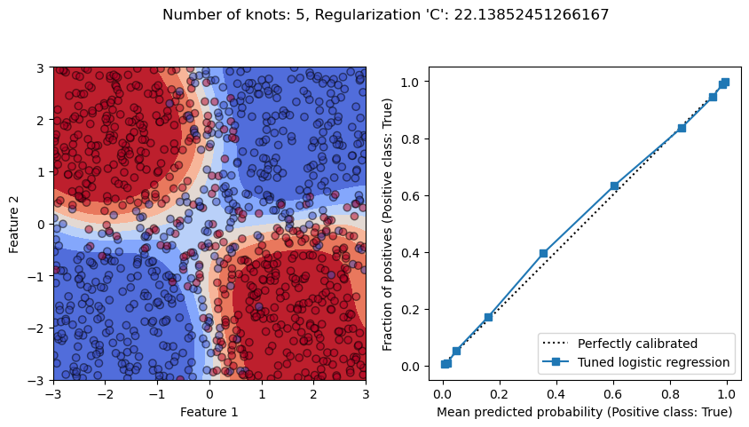
We see that our procedure leads to a well-calibrated model since we used a cross-validated as expected.